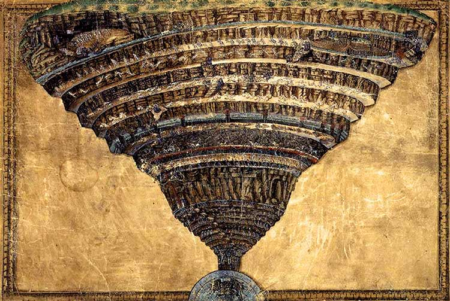

Inferno
Autor:Dan Brown Nº páginas:594 Publicação:05/2013 Capitulo 1: Leia clicando aqui
Sinopse:No coração da Itália, Robert Langdon, o professor de Simbologia de Harvard, é arrastado para um mundo angustiante centrado em uma das obra literárias mais duradouras e misteriosas da história: O Inferno, de Dante Alighieri. Numa corrida contra o tempo, Langdon luta contra um adversário assustador e enfrenta um enigma engenhoso que o arrasta para uma clássica paisagem de arte, passagens secretas e ciência futurística. Tendo como pano de fundo o sombrio poema de Dante, Langdon mergulha numa caçada frenética para encontrar respostas e decidir em quem confiar, antes que o mundo que conhecemos seja destruído.
Dan Brown
Dan Brown é o autor de suspense mais popular da atualidade, com mais de 200 milhões de livros vendidos. Seu megaseller O Código Da Vinci já ultrapassou a marca de 80 milhões de exemplares em todo o mundo. Ele também escreveu Inferno, O Símbolo Perdido, Anjos e Demônios, Fortaleza Digital e Ponto de Impacto. Dan é casado com a pintora e historiadora da arte Blythe, que colabora nas pesquisas de seus livros. Ele mora na Nova Inglaterra, nos Estados Unidos.
Interessante saber (ou não)
O livro (o terceiro da serie) assim como os outros foi adaptado para o cinema, e Tom Hanks interpreta nosso mestre da simbologia Robert Langdon.
Todas as referências históricas e obras de arte, literatura e ciência citadas são reais.
"o Consórcio" é uma organização secreta com escritorios em sete países. Seu nome foi modificado por questões de segurança e privacidade.
Inferno é o mundo inferior que Dante Alighierie retrata no poema épico "A divina comédia".
"Mapa do inferno" ilustração de Sandro Botticelli, do século XV, que representa um dos Cantos do "Inferno", primeiro dos três longos poemas que formam a Comédia (posteriormente Divina Comédia), obra-prima de Dante Alighieri.
Frases/Citações
O Inferno de Dante criou um mundo de dor e sofrimento nunca antes imaginado pelo homem e definiu nossas visões modernas do Inferno. Podem acreditar: a Igreja Católica tem muito a agradecer a Dante. Seu Inferno aterrorizou fiéis por séculos a fio e triplicou o número de frequentadores da Igreja. – Robert Langdon.
Nada é mais criativo ou destrutivo do que uma mente brilhante com um propósito.
 Voltar ao topo
Voltar ao topo